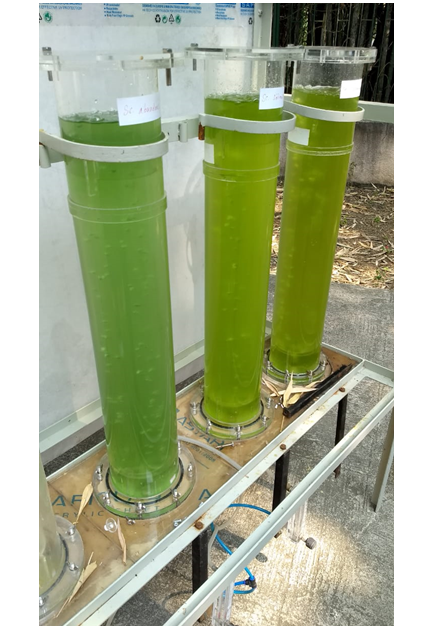
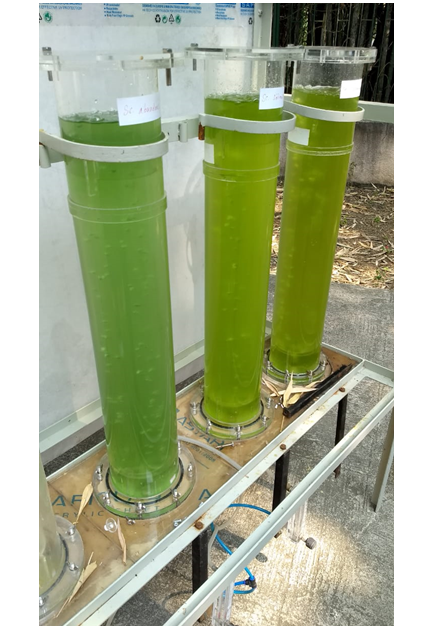

Your Name
CV & Research Portfolio
About Me
13+ years of teaching and research experience after regular PhD (2010).
Google Scholar citation 800+ and h-index = 16.
Proven track record of research with 21 international publications in journals of well-reputed publishers such as Elsevier, Taylor and Francis, Springer, and Wiley.
Over five years of experience handling research projects under DST Inspire Faculty Award (Equivalent to Assistant Professor IIT).
Guided 1 PhD student registered under Academic CSIR New Delhi.
Grant received so far: 35 lakhs from DST.
Two design patents filed and one accepted.
Education
Ph.D. in Chemical Engineering - ICT Mumbai (2010)
M. Chem. Eng. - ICT Mumbai (2006)
B.E. Chemical Engineering - KES Pen, Mumbai University (2003)
Experience
Current Employment (October 2021 – Present)
Padmabhushan Vasantraodada Patil Institute of Technology (PVPIT), Sangli, (MH) - India
Associate Professor of Chemical Engineering
Subjects: MTO I and II, Renewable Energy, CFD, and Python add-on courses
Self-Employment (Sept 2019 - Feb 2021)
Area of Business: Certification courses in Computational Software Engineering, consulting
Past Employment (April 2014 – March 2019)
CSIR-National Environmental Engineering Research Institute (NEERI), Nagpur- India
Research Faculty (Equivalent to Assistant Professor at IIT)
Project Sponsored by Inspire Division, DST, New Delhi
Project title/work: Microalgae biofuels: Experimentation, and CFD simulation
- Established “Bioenergy from Microalgae Lab” with all analytical equipment
- Developed bench-scale bioreactors (Airlift, Bubble, Tubular type)
- Designed a new large-scale bioreactor based on extensive CFD work, significantly enhancing mass transfer and mixing characteristics
Research Images

 


Publications (Last 10 Years)
- Publication 1 - Year
- Publication 2 - Year
- Publication 3 - Year
- Publication 4 - Year
Participated / Attended International Conferences
- Asia Pacific Drying Conference, Hong Kong University of Science and Technology, Hong Kong, China, August 2007.
- International Drying Conference, Ramoji Film City, Hyderabad, India, November 2008.
- European Drying Conference, AFSIA, University of Lyon, March 2009, Lyon, France.
- International Drying Symposium 2010, University of Magdeburg, Magdeburg, Germany.
- The 9th Asia Pacific Conference on Algal Biotechnology 2016, Bangkok, Thailand.
- International Conference on Emerging Trends in Biotech for Waste Conversion, BRSI conference 2017, Nagpur, India.
- International Conference on Biotechnological Research and Innovation for Sustainable Development (BioSD-2018), Hyderabad, India.